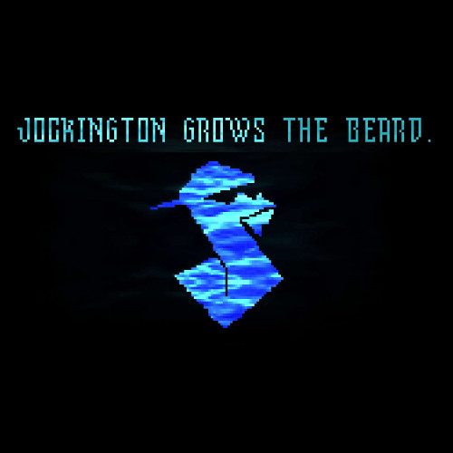

JUNE 2025

Hello everyone, hope you all had a great June. Usually, I’d say, “I hope you’re having a good June so far,” but this is coming out near the end. This month has been full of ups and downs for me. My channel has gained a bit more traction—this was actually my biggest month yet for subs, with 13 gained in just one month. I made three videos this month, each with varying degrees of success. The Mario video exceeded my expectations and then some, reaching over 1K views and becoming the second most viewed video on my channel. The Deltarune video was really fun to make—it didn’t do insanely well, but people left nice comments. Views aren’t everything; I’d rather have 10 comments than 1,000 views, if you get me. The Persona video was a long time coming, and I plan to release more in the future. There’s also a big video planned about the game Metaphor, but that’s further down the line. You might have noticed I said “main channel” earlier—because that’s right, I now have a side channel called CRAIKO [DELTARUNE]. I’m currently working on a high-quality Deltarune let’s play that will 100% the game and cover every route. It won’t be public until the full series is done, but it’s already available on my website and through the account’s playlist. You can find it under the Works section of the site. That’s it for this June. See you all on July 15th for another update.